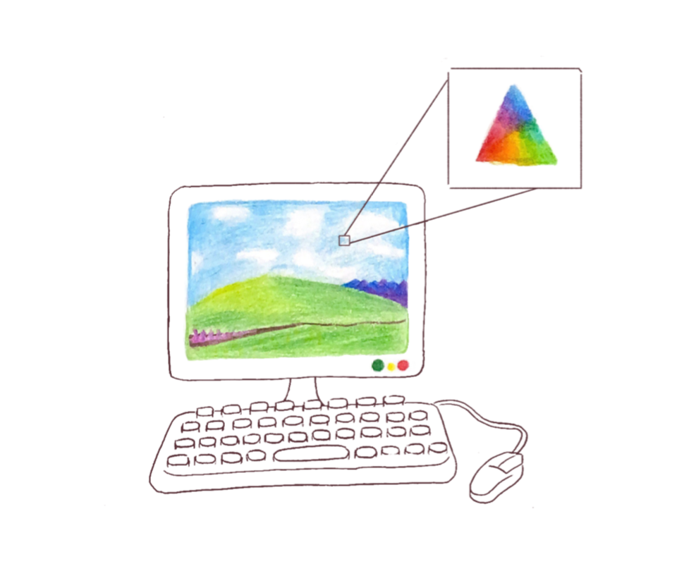
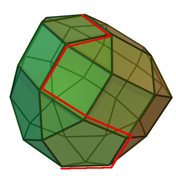
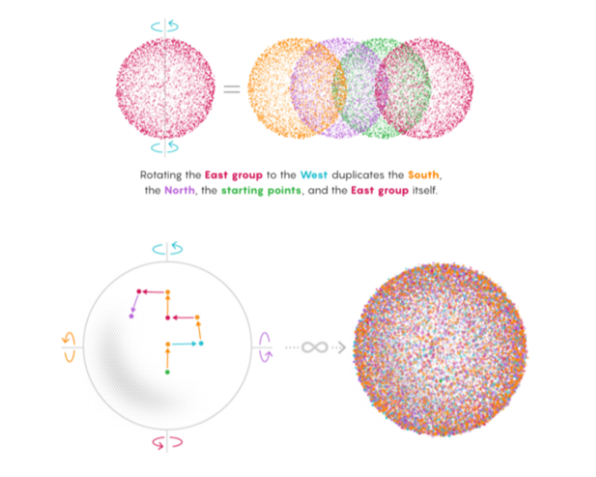
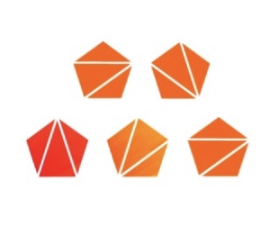
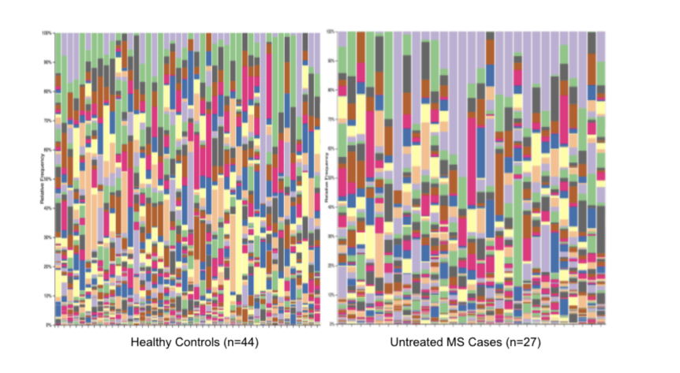
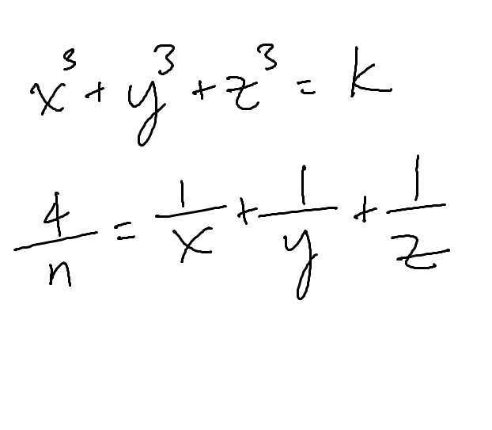

The Official Publication of the Stuyvesant Math and Computer Science Department since 1927
Quadratic Number Theory
By Tanvir Ahmed Continue reading
By Tanvir Ahmed Continue reading
Catalan Numbers
By Ivy Zhu Continue reading
By Ivy Zhu Continue reading
Primitive Roots
By Patrick Was Continue reading
By Patrick Was Continue reading
Lucas Numbers
By Elizabeth Burnell Continue reading
By Elizabeth Burnell Continue reading
Soddy Circles, Inversion, and Descartes’ Circle Theorem
By Ethan Sharma Continue reading
By Ethan Sharma Continue reading
P-Adic Numbers
By Tanvir Ahmed Continue reading
By Tanvir Ahmed Continue reading
Galois and Quintic Formula
By Patrick Was Continue reading
By Patrick Was Continue reading
Magic Squares
By Ivy Zhu Continue reading
By Ivy Zhu Continue reading
Cool Things You Need to Know About Triangles
By Qinwen Zheng Continue reading
By Qinwen Zheng Continue reading
Circles and Quadrilaterals
By Patrick Was Continue reading
By Patrick Was Continue reading
Cross Sections of Real Life: Conics
By Ethan Sharma Continue reading
By Ethan Sharma Continue reading
Newton’s Sums
By David Jiang Continue reading
By David Jiang Continue reading
Numbers Are Based
By Elijah White Continue reading
By Elijah White Continue reading
How Often Do Powers of 2 Start with a 1?
By Daniel Potievsky Continue reading
By Daniel Potievsky Continue reading
Numbers on a Clothesline
By Aditya Pahuja Continue reading
By Aditya Pahuja Continue reading
Shapiro’s Inequality: A Remarkable Use of Convex Functions
By Daniel Potievsky Continue reading
By Daniel Potievsky Continue reading
Representations of Numbers in Various Bases
By Leonna Wang Continue reading
By Leonna Wang Continue reading
Matroid Intersection: Generalizing Problems in Combinatorial Optimization
By Shuichi Kinoshita Continue reading
By Shuichi Kinoshita Continue reading
The Power of Infinity: Cantor, Cohen, and Infinite Sets
By Daniel Potievsky Continue reading
By Daniel Potievsky Continue reading
Barycentric Coordinates: Trading a Point of Origin for a Triangle
By Aditya Pahuja Continue reading
By Aditya Pahuja Continue reading

The Graph Theory Behind Games:
The Seven Bridges of Konigsberg and the Game of Hex
By Shaon Anwar Continue reading
By Shaon Anwar Continue reading

The Facility Location Problem
By Yuhao “Ben” Pan Continue reading
By Yuhao “Ben” Pan Continue reading

Banach-Tarski and the Paradox of Infinite Cloning
By Lamisa Aziz Continue reading
By Lamisa Aziz Continue reading

Exploring Catalan Numbers and Their Strikingly Distinct Applications
By Krish Bhandari Continue reading
By Krish Bhandari Continue reading

Analyzing beta-glucuronidase expression in gut microbial populations of MS patients and healthy controls: An intersection of immunology and computer science
By Amanda Zhong, Arthur Liang Continue reading
By Amanda Zhong, Arthur Liang Continue reading

NOVID: Exploring the Network Theory Used to Track the Spread of COVID-19
By Richard Wang Continue reading
By Richard Wang Continue reading
Fermat's Little Theorem and Cryptography
By John Gupta-She Continue reading
By John Gupta-She Continue reading
Diophantine Equations: The Answer Really Is 42
By Josephine Lee Continue reading
By Josephine Lee Continue reading
